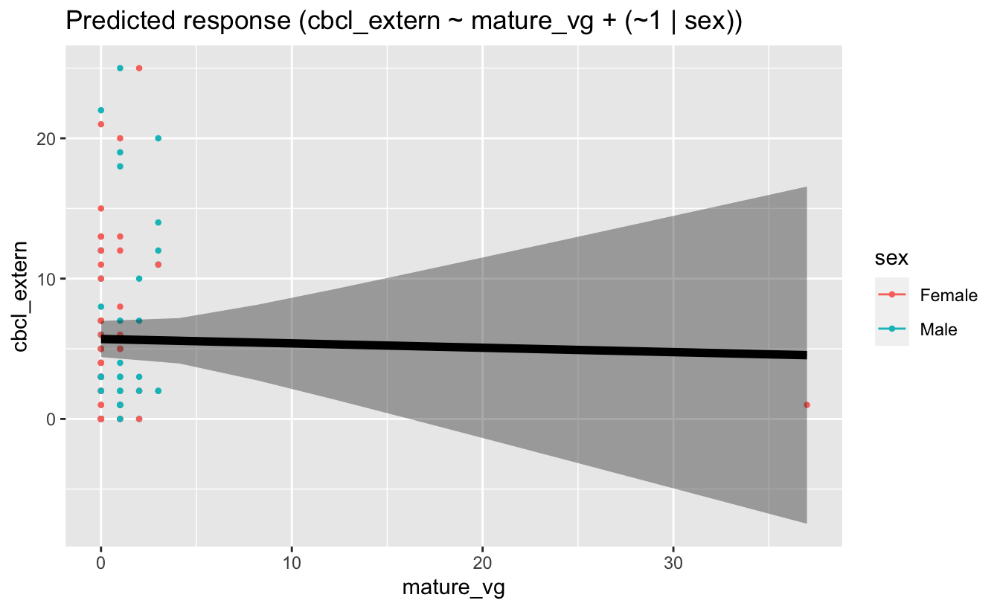

Linear Mixed Model with a Random-Intercept (LMM:ri)
The LMM:ri is similar to traditional (fixed-effect) linear regression extending on this approach by including a subject-specific random-effect that allows each participant to have their own unique intercept value, in addition to the overall mean-level (fixed-effect) intercept value zzzzt
In this example, we will use the LMM:ri to analyze trajectories of scores on the externalizing subscale of the child behavior checklist (CBCL) obtained across three measurement occasions in a sample of youth taking part in the ABCD Study. Our primary aim is to characterize stability and change in CBCL externalizing scores across assessments, while accounting for observations that are clustered within youth over time. To do so, we will use the LMM:ri to simultaneously model an overall sample mean trajectory (fixed effect) and subject-specific (random) effects that vary randomly about the sample mean trajectory.
## Linear Mixed Model with a random intercept (LMM-ri)random_intercepts <-lmer(cbcl_extern ~1+ event + sex + (1|ids), data = df_long, REML=T)print(random_intercepts)
Linear mixed model fit by REML ['lmerModLmerTest']
Formula: cbcl_extern ~ 1 + event + sex + (1 | ids)
Data: df_long
REML criterion at convergence: 588.7995
Random effects:
Groups Name Std.Dev.
ids (Intercept) 5.020
Residual 3.587
Number of obs: 99, groups: ids, 37
Fixed Effects:
(Intercept) eventYear_1 eventYear_2 sexMale
4.3204 0.7650 1.7481 0.5837
The code snippet above tells R to run a linear mixed model using lmer from the lme4 library. The left side of the “~†symbol specifies the dependent variable; the right side specifies days as the independent variable(s). The code (1 | Subject) specifies a random intercept for each subject.
testing
## Output and reports extending from the LMM-ri analysessummary(random_intercepts)
Linear mixed model fit by REML. t-tests use Satterthwaite's method [
lmerModLmerTest]
Formula: cbcl_extern ~ 1 + event + sex + (1 | ids)
Data: df_long
REML criterion at convergence: 588.8
Scaled residuals:
Min 1Q Median 3Q Max
-1.7239 -0.4710 -0.1888 0.2910 2.9047
Random effects:
Groups Name Variance Std.Dev.
ids (Intercept) 25.20 5.020
Residual 12.86 3.587
Number of obs: 99, groups: ids, 37
Fixed effects:
Estimate Std. Error df t value Pr(>|t|)
(Intercept) 4.3204 1.3277 46.9852 3.254 0.00211 **
eventYear_1 0.7650 0.8768 62.6158 0.873 0.38626
eventYear_2 1.7481 0.9173 63.4712 1.906 0.06123 .
sexMale 0.5837 1.8240 36.0452 0.320 0.75081
---
Signif. codes: 0 '***' 0.001 '**' 0.01 '*' 0.05 '.' 0.1 ' ' 1
Correlation of Fixed Effects:
(Intr) evnY_1 evnY_2
eventYear_1 -0.343
eventYear_2 -0.317 0.475
sexMale -0.631 0.032 0.013
2.5 % 97.5 %
.sig01 NA NA
.sigma NA NA
(Intercept) 1.71808695 6.922714
eventYear_1 -0.95342829 2.483383
eventYear_2 -0.04987969 3.546050
sexMale -2.99121329 4.158581
testing
report(random_intercepts)
We fitted a linear mixed model (estimated using REML and nloptwrap optimizer)
to predict cbcl_extern with event and sex (formula: cbcl_extern ~ 1 + event +
sex). The model included ids as random effect (formula: ~1 | ids). The model's
total explanatory power is substantial (conditional R2 = 0.67) and the part
related to the fixed effects alone (marginal R2) is of 0.02. The model's
intercept, corresponding to event = Baseline and sex = Female, is at 4.32 (95%
CI [1.68, 6.96], t(93) = 3.25, p = 0.002). Within this model:
- The effect of event [Year_1] is statistically non-significant and positive
(beta = 0.76, 95% CI [-0.98, 2.51], t(93) = 0.87, p = 0.385; Std. beta = 0.12,
95% CI [-0.16, 0.40])
- The effect of event [Year_2] is statistically non-significant and positive
(beta = 1.75, 95% CI [-0.07, 3.57], t(93) = 1.91, p = 0.060; Std. beta = 0.28,
95% CI [-0.01, 0.58])
- The effect of sex [Male] is statistically non-significant and positive (beta
= 0.58, 95% CI [-3.04, 4.21], t(93) = 0.32, p = 0.750; Std. beta = 0.09, 95% CI
[-0.49, 0.68])
Standardized parameters were obtained by fitting the model on a standardized
version of the dataset. 95% Confidence Intervals (CIs) and p-values were
computed using a Wald t-distribution approximation.
testing
report_performance(random_intercepts)
The model's total explanatory power is substantial (conditional R2 = 0.67) and
the part related to the fixed effects alone (marginal R2) is of 0.02
testing
report_statistics(random_intercepts)
beta = 4.32, 95% CI [1.68, 6.96], t(93) = 3.25, p = 0.002; Std. beta = -0.22, 95% CI [-0.64, 0.21]
beta = 0.76, 95% CI [-0.98, 2.51], t(93) = 0.87, p = 0.385; Std. beta = 0.12, 95% CI [-0.16, 0.40]
beta = 1.75, 95% CI [-0.07, 3.57], t(93) = 1.91, p = 0.060; Std. beta = 0.28, 95% CI [-0.01, 0.58]
beta = 0.58, 95% CI [-3.04, 4.21], t(93) = 0.32, p = 0.750; Std. beta = 0.09, 95% CI [-0.49, 0.68]
## Obtain LMM-ri model parameters to plot/graph of resultsmodel_intercept <-as.numeric(fixef(random_intercepts)[1])model_slope <-as.numeric(fixef(random_intercepts)[2])
This code allows for extracting the fixed effects estimates for the model intercept and slope.
Extract the individual participant intercepts (random effects) for this model and add it to the data frame for plotting
Build diagnostic plots. Observations with a Bonferroni p < .05 might be considered as outliers and might need further investigation.
Code
# Basic ggplot2 barplot with meanp<-df_long %>%filter(!is.na(mature_vg)) %>%# filter on non-missing values ggplot(aes(x = mature_vg, y = cbcl_extern, fill = sex)) +geom_col(position ="dodge",stat ="summary",fun ="mean",#fill = "#AA4A44",#color = "#0099f9" ) +#scale_fill_brewer(palette = "Set1") +scale_fill_manual(values =c("#3db5ff", "#0099f9")) +#scale_fill_gradient(high = "#B00B69", low = "#0e0e63") +#geom_text(aes(label = cu_traits), position = position_dodge(0.9), #vjust = 2, size = 4, color = "#ffffff") +labs(title ="Behavior Problems by Video Game Groups", subtitle ="Simple bar chart",caption ="Simple caption", x ="DBD Group", y ="CBCL Externalizing") +#coord_flip() +#geom_hline(yintercept = mean(df$cbcl_agg), linetype = "dashed", size = 1) +theme_minimal() +theme(plot.title =element_text(color ="#0099f9", size =20, hjust =0.5),plot.subtitle =element_text(face ="bold", hjust =1),plot.caption =element_text(face ="italic", hjust =0),axis.title.x =element_text(color ="#0099f9", size =15, face ="bold"),axis.title.y =element_text(size =15, face ="italic") )p
Code
#random_intercepts <- lmer(Externalizing ~ 1 + Event + DBD + Sex + (1|ids), data = df, #REML=T)## LMM-ri plot of estimated random intercepts model <-lmer(cbcl_extern ~ mature_vg + (1| sex), data = df_long)preds <-estimate_relation(model, include_random =TRUE)## Adding fixed effect trajectory to LMM-ri plot fixed_pred <-estimate_relation(model) # This time, include_random is FALSE (default)plot(preds, ribbon =list(alpha =0)) +# Previous plotgeom_ribbon(data = fixed_pred, aes(x = mature_vg, ymin = CI_low, ymax = CI_high), alpha =0.4) +geom_line(data = fixed_pred, aes(x = mature_vg, y = Predicted), size =2)

This is a caption for my figure, using YAML formatting, etc.#|
Figure x: The overall group-mean (fixed effects) trajectory is shown in blue. The faded lines represent each individual youth’s estimated trajectory. An examination of this figure shows happiness scores to be increasing across measurement occasions, however, there appears to be substantial variability in the youth’s initial happiness scores.
Interpretation
The estimated correlation between x and y was “r cor(x,y). There are "r nrow(my_data) individuals.
From the fixed effects section of the model summary, we can conclude that there is strong evidence that RT increased significantly over time (i.e., # of years). On average for each additional year, RT increased by 10.46 (b = 10.46, SE = 0.80, p < .001).We are 95% confident that the average increase was between 8.89 and 12.04.
In the above, we estimate that the average intercept across all participants is 251.4. Results from the random effects section below show that the variance of the intercept for Subject is 1378.2. Taking the square root, the standard deviation of the intercept is thus 37.1.
We can calculate the 95% coverage interval as 251.4 ± 1.96*37.1. The lower bound of the 95% coverage interval is thus 178.7 and the upper bound is 324.1. We therefore estimated that 95% of the participants have an intercept between 178.7 and 324.1. This means that 95% of the participants have a reaction time between 178.7 and 324.1 at Day 0. This is not to be confused with the 95% confidence interval of the intercept. The 95% confidence interval is (232.3, 270.5), and this indicates that we are 95% confident that the average intercept is somewhere between 232.3 and 270.5.
In this model, we have accounted for the repeated measures design (observations nested within individuals) by including a random intercept for each participants. Each individual has his/her own intercept. The effect of time(Year) on RT is assumed to be the same across individuals. This assumption can be relaxed by fitting a random slope model.
Mock Write-up
A random slope model is used to test if sleep deprivation affects reaction time. To account for the repeated measures design, a random intercept was specified for participants. The random slope for days of sleep deprivation was included in the model to allow the effect of sleep deprivation to vary across participants. Results are shown in Table 1. Using a significant level of 0.05, results indicate that sleep deprivation significantly increased reaction time. On average, each additional day of sleep deprivation increased reaction time by 10.47ms (b = 10.47, 95% CI = [7.44, 13.50], p < .001). Model fit comparison between model with and without random slope for sleep deprivation shows that the effect of sleep deprivation varied across participants, χ2(2)= 42.14, p < .001. The 95% coverage interval for the random slope of sleep deprivation is (-1.14, 22.07), indicating that the effect of sleep deprivation was between -1.14 and 22.07 for 95% of the participants. :::
---title: "Linear Mixed Models: Random Intercept"author: "Biostatistics Working Group"---## Linear Mixed Model with a Random-Intercept (LMM:ri)<p>The LMM:ri is similar to traditional (fixed-effect) linear regression extending on this approach by including a subject-specific random-effect that allows each participant to have their own unique intercept value, in addition to the overall mean-level (fixed-effect) intercept value zzzztIn this example, we will use the LMM:ri to analyze trajectories of scores on the externalizing subscale of the child behavior checklist (CBCL) obtained across three measurement occasions in a sample of youth taking part in the ABCD Study. Our primary aim is to characterize stability and change in CBCL externalizing scores across assessments, while accounting for observations that are clustered within youth over time. To do so, we will use the LMM:ri to simultaneously model an overall sample mean trajectory (fixed effect) and subject-specific (random) effects that vary randomly about the sample mean trajectory. </p>## Preliminary Setup::: {.panel-tabset}### Load Libraries {.tabset .tabset-fade .tabset-pills}example-text before code block<divclass="blue">```{r pckg-install}#| echo: TRUE#| messages: FALSE#| warning: FALSE## Install necessary packages (if not already installed)if (!("lme4"%in%installed.packages())) install.packages("lme4")if (!("lmerTest"%in%installed.packages())) install.packages("lmerTest")if (!("tidyverse"%in%installed.packages())) install.packages("tidyverse")if (!("arrow"%in%installed.packages())) install.packages("arrow")if (!("afex"%in%installed.packages())) install.packages("afex")if (!("janitor"%in%installed.packages())) install.packages("janitor")if (!("skimr"%in%installed.packages())) install.packages("skimr")if (!("sdamr"%in%installed.packages())) install.packages("sdamr")if (!("formatR"%in%installed.packages())) install.packages("formatR")if (!("report"%in%installed.packages())) install.packages("report")if (!("easystats"%in%installed.packages())) install.packages("easystats")if (!("emmeans"%in%installed.packages())) install.packages("emmeans")if (!("poorman"%in%installed.packages())) install.packages("poorman")if (!("parameters"%in%installed.packages())) install.packages("parameters")if (!("modelbased"%in%installed.packages())) install.packages("modelbased")if (!("DT"%in%installed.packages())) install.packages("DT")if (!("data.table"%in%installed.packages())) install.packages("data.table")if (!("arsenal"%in%installed.packages())) install.packages("arsenal")if (!("kableExtra"%in%installed.packages())) install.packages("kableExtra")if (!("equatiomatic"%in%installed.packages())) install.packages("equatiomatic")if (!("gtsummary"%in%installed.packages())) install.packages("gtsummary")```</div>example-text after code block### Load Packages<divclass="blue">```{r pckg-load}#| echo: TRUE#| messages: FALSE#| warning: FALSE#| class.source: fold-hide## Load packageslibrary(lme4)library(lmerTest)library(tidyverse)library(arrow)library(afex)library(janitor)library(skimr)library(sdamr)library(formatR)library(report)library(easystats)library(emmeans)library(poorman)library(parameters)library(modelbased)library(DT)library(data.table)library(arsenal)library(kableExtra)library(equatiomatic)library(gtsummary)```</div>### Config Options<divclass="blue">```{r config}#| echo: TRUE#| messages: FALSE#| warning: FALSEknitr::opts_chunk$set(echo = T, message=F, warning=F, error=F, comment=NA, cache=T, code_folding=T,R.options=list(width=220), fig.align='center', out.width='75%', fig.asp=.75)```</div>:::## Descriptives Overview::: {.panel-tabset}### Data Table {.tabset .tabset-fade .tabset-pills}<divclass="blue">```{r data-table}#| echo: TRUE#| messages: FALSE#| warning: FALSEdf_long<-read_csv("/Users/shawes/Desktop/data/df_long.csv")#df_long_sub<- read_csv("/Users/shawes/Desktop/df_long_sub.csv")## Create a viewable 'datatable' of the primary dataframe (df)datatable(head(df_long, 50, rownames =FALSE),extensions ='AutoFill','ColReorder', options =list(autoFill =TRUE,colReorder =TRUE,columnDefs =list(list(className ='dt-center', targets =10)),order =list(list(3, 'asc'), list(4, 'desc')),pageLength =10,lengthMenu =c(10, 15, 20),initComplete =JS("function(settings, json) {","$(this.api().table().header()).css({'background-color': '#808080', 'color': '#fff'});","}")))## Not run: # Specify table size by pixels#kable(cbind(df_long, df_long), "html") %>%# kable_styling() %>%# scroll_box(width = "100%", height = "500px")```</div>### Descriptives<divclass="blue">```{r descriptives}#| messages: FALSE#| echo: TRUE#| warning: FALSE#| results: "asis"## Create a descriptives table of study variables by measurement occasion descriptives_1 <-tableby.control(test=FALSE, total=FALSE,numeric.test="kwt", cat.test="chisq",numeric.stats=c("N", "meansd", "median", "range" ), #"Nmiss2"cat.stats=c("countpct"), #"Nmiss2"stats.labels=list(N='Count', meansd="Mean (SD)", median='Median', range='Min - Max' )) #, Nmiss2 ='Missing'my_cont_labels <-list(age ="Age",vg_total ="Weekly # of Video Gaming Hrs",cbcl_extern ="CBCL Externalizing Scale")tab_descriptives_1 <-tableby(event ~ age + vg_total + cbcl_extern,data=df_long, control=descriptives_1)#summary(tab_descriptives_1, labelTranslations = my_cont_labels , text=TRUE, title = #"Continuous Outcomes", term.name = TRUE)# Push table object through kable and kable_stylingtab_descriptives_1 %>%summary(text=TRUE, digits.pct=1, digits=1) %>%kable(caption ="Continuous Outcomes") %>%kable_styling(bootstrap_options ="striped", full_width =FALSE, html_font ="Cambria",font_size =15,position ="center", fixed_thead = T) %>%row_spec(2:3, bold = F, extra_css ='vertical-align: middle !important;') %>%column_spec(1, width ="20em", background ="light grey", bold = T, border_right = T) %>%column_spec(2, width ="20em", border_right = T) %>%column_spec(3, width ="20em", border_right = T) %>%footnote(general ="Here is a general comments of the table. ") %>%scroll_box(width ="75%", height ="500px")```</div><divclass="blue">```{r catvar-table}#| messages: FALSE#| warning: FALSE#| results: "asis"## Create a descriptives table of study variables by measurement occasion descriptives_2 <-tableby.control(test=FALSE, total=FALSE,numeric.test="kwt", cat.test="chisq",numeric.stats=c("N", "meansd", "median", "range" ), # "Nmiss2"cat.stats=c("countpct"), # "Nmiss2"stats.labels=list(N='Count', meansd="Mean (SD)", median='Median', range='Min - Max' )) # , Nmiss2 ='Missing'my_cat_labels <-list(event ="Year",sex ="Sex",mature_vg ="Mature Video Games" )tab_descriptives_2 <-tableby(event ~ sex + mature_vg, data=df_long, control=descriptives_2)#summary(tab_descriptives_2, labelTranslations = my_cat_labels , text=TRUE, title = #"Categorical Outcomes", term.name = TRUE)# Push table object through kable and kable_stylingtab_descriptives_2 %>%summary(text=TRUE, digits.pct=1, digits=1) %>%kable(caption ="Categorical Outcomes") %>%kable_styling(bootstrap_options ="striped", full_width =FALSE, font_size =15,position ="center", fixed_thead = T) %>%row_spec(2:3, bold = F, extra_css ='vertical-align: middle !important;') %>%column_spec(1, width ="20em", background ="light grey", bold = T, border_right = T) %>%column_spec(2, width ="20em", border_right = T) %>%#column_spec(3, width = "20em", border_right = T) %>%footnote(general ="Here is a general comments of the table. ") %>%scroll_box(width ="75%", height ="500px")```</div>:::## Results ::: {.panel-tabset}### Build Model {.tabset .tabset-fade .tabset-pills}<divclass="blue">```{r build-model}#| echo: TRUE#| messages: FALSE#| warning: FALSE## Linear Mixed Model with a random intercept (LMM-ri)random_intercepts <-lmer(cbcl_extern ~1+ event + sex + (1|ids), data = df_long, REML=T)print(random_intercepts)```</div>> The code snippet above tells R to run a linear mixed model using lmer> from the lme4 library. The left side of the "\~" symbol specifies the> dependent variable; the right side specifies days as the independent> variable(s). The code (1 \| Subject) specifies a random intercept for> each subject.### Model Output<divclass="blue">```{r model-output}#| echo: TRUE#| messages: FALSE#| warning: FALSE#| code-summary: testing## Output and reports extending from the LMM-ri analysessummary(random_intercepts)confint(random_intercepts, level =0.95, method ="Wald")report(random_intercepts)report_performance(random_intercepts)report_statistics(random_intercepts)random <-estimate_grouplevel(random_intercepts)```</div>### Model Report<divclass="blue">```{r mod-report}#| echo: TRUE#| messages: FALSE#| warning: FALSE#df_long %>%# report() %>%# summary()```</div>:::## Visualizations ::: {.panel-tabset}### Extract Params {.tabset .tabset-fade .tabset-pills}<divclass="blue">```{r extrct-FE}#| messages: FALSE#| warning: FALSE## Obtain LMM-ri model parameters to plot/graph of resultsmodel_intercept <-as.numeric(fixef(random_intercepts)[1])model_slope <-as.numeric(fixef(random_intercepts)[2])```</div>> This code allows for extracting the fixed effects estimates for the> model intercept and slope.<divclass="blue">```{r extrct-RE}#| class.source: 'fold-hide'#| message: FALSE#| warning: FALSE#| echo: FALSEintercepts <-rep(coef(random_intercepts)$ids[,1], each =4)```</div>> Extract the individual participant intercepts (random effects) for this model and add> it to the data frame for plotting### Diagnostic Plots<divclass="blue">```{r diag-plots}#| messages: FALSE#| warning: FALSE#| echo: FALSE#| column: screen-inset-shaded#| layout-nrow: 2## xxxxx plotrandom_intercepts.std <-resid(random_intercepts)/sd(resid(random_intercepts))plot(random_intercepts.std, ylab="Standardized Residuals")## Outlier Tests. #car::outlierTest(random_intercepts)car::infIndexPlot(random_intercepts)## qqplotggplot(as.data.frame(random_intercepts.std), aes(sample = random_intercepts.std)) +geom_qq() +geom_qq_line()## Predicted vs Actual plotpredicted <-estimate_expectation(random_intercepts, data ="grid")plot(predicted)## Estimated means plotmeans <-estimate_means(random_intercepts)plot(means)```</div>> Build diagnostic plots. Observations with a Bonferroni p \< .05 might> be considered as outliers and might need further investigation.### Bar Plot```{r barplot}#| messages: FALSE#| warning: FALSE#| echo: TRUE# Basic ggplot2 barplot with meanp<-df_long %>%filter(!is.na(mature_vg)) %>%# filter on non-missing values ggplot(aes(x = mature_vg, y = cbcl_extern, fill = sex)) +geom_col(position ="dodge",stat ="summary",fun ="mean",#fill = "#AA4A44",#color = "#0099f9" ) +#scale_fill_brewer(palette = "Set1") +scale_fill_manual(values =c("#3db5ff", "#0099f9")) +#scale_fill_gradient(high = "#B00B69", low = "#0e0e63") +#geom_text(aes(label = cu_traits), position = position_dodge(0.9), #vjust = 2, size = 4, color = "#ffffff") +labs(title ="Behavior Problems by Video Game Groups", subtitle ="Simple bar chart",caption ="Simple caption", x ="DBD Group", y ="CBCL Externalizing") +#coord_flip() +#geom_hline(yintercept = mean(df$cbcl_agg), linetype = "dashed", size = 1) +theme_minimal() +theme(plot.title =element_text(color ="#0099f9", size =20, hjust =0.5),plot.subtitle =element_text(face ="bold", hjust =1),plot.caption =element_text(face ="italic", hjust =0),axis.title.x =element_text(color ="#0099f9", size =15, face ="bold"),axis.title.y =element_text(size =15, face ="italic") )p```### Random Intercept LMM Plot/Graph<divclass="blue">```{r lmmri-graph}#| echo: TRUE#| messages: FALSE#| warning: FALSE#| label: my-figure#| fig-asp: 0.61#| fig-cap: |#| This is a caption for my figure, #| using YAML formatting, etc.#| #random_intercepts <- lmer(Externalizing ~ 1 + Event + DBD + Sex + (1|ids), data = df, #REML=T)## LMM-ri plot of estimated random intercepts model <-lmer(cbcl_extern ~ mature_vg + (1| sex), data = df_long)preds <-estimate_relation(model, include_random =TRUE)## Adding fixed effect trajectory to LMM-ri plot fixed_pred <-estimate_relation(model) # This time, include_random is FALSE (default)plot(preds, ribbon =list(alpha =0)) +# Previous plotgeom_ribbon(data = fixed_pred, aes(x = mature_vg, ymin = CI_low, ymax = CI_high), alpha =0.4) +geom_line(data = fixed_pred, aes(x = mature_vg, y = Predicted), size =2)####### ggplot(df_long_sub, aes(x = event, y = cbcl_agg, color=sex, shape=sex)) + # geom_abline(slope = model_slope, intercept = model_intercept, linetype = "solid", color = "red", linewidth = 1) + # geom_point(color = "grey70") + # geom_smooth(method=lm, se=FALSE, fullrange=TRUE)+# scale_shape() + # geom_segment(aes(x = event, xend = event, y = cbcl_agg, yend = fitted(cbcl_agg)), color = "grey70") + # scale_y_continuous(expand = c(0, 0), breaks = c(0, 20, 40, 60, 80, 100), limits = c(0, 100)) + # scale_x_continuous(expand = c(0, 0), breaks = c(1, 2, 3, 4), limits = c(0, 4)) +# theme(panel.background = element_blank(), # panel.grid.major = element_blank(),# panel.grid.minor = element_blank(),# panel.border = element_rect(colour = "black", fill = NA),# legend.position = "none",# axis.text = element_text(size = 14), # axis.title = element_text(size = 14)) +# labs (x = "Event", y= "CBCL Aggression")#Save the plot#ggsave("random_intercept.png", units = "in", width = 9, height = 6, dpi = 300) ```</div>:::<pclass="text-center"style="background-color: gray">Figure x: The overall group-mean (fixed effects) trajectory is shown in blue. The faded lines represent each individual youth's estimated trajectory. An examination of this figure shows happiness scores to be increasing across measurement occasions, however, there appears to be substantial variability in the youth's initial happiness scores.</p>#### InterpretationThe estimated correlation between x and y was "r cor(x,y)`.There are "r nrow(my_data)` individuals.From the fixed effects section of the model summary, we can concludethat there is strong evidence that RT increased significantly over time(i.e., \# of years). On average for each additional year, RT increasedby 10.46 (b = 10.46, SE = 0.80, p \< .001).We are 95% confident that theaverage increase was between 8.89 and 12.04.In the above, we estimate that the average intercept across allparticipants is 251.4. Results from the random effects section belowshow that the variance of the intercept for Subject is 1378.2. Takingthe square root, the standard deviation of the intercept is thus 37.1.We can calculate the 95% coverage interval as 251.4 ± 1.96\*37.1. Thelower bound of the 95% coverage interval is thus 178.7 and the upperbound is 324.1. We therefore estimated that 95% of the participants havean intercept between 178.7 and 324.1. This means that 95% of theparticipants have a reaction time between 178.7 and 324.1 at Day 0. Thisis not to be confused with the 95% confidence interval of the intercept.The 95% confidence interval is (232.3, 270.5), and this indicates thatwe are 95% confident that the average intercept is somewhere between232.3 and 270.5.In this model, we have accounted for the repeated measures design(observations nested within individuals) by including a random interceptfor each participants. Each individual has his/her own intercept. Theeffect of time(Year) on RT is assumed to be the same across individuals.This assumption can be relaxed by fitting a random slope model.#### Mock Write-upA random slope model is used to test if sleep deprivation affectsreaction time. To account for the repeated measures design, a randomintercept was specified for participants. The random slope for days ofsleep deprivation was included in the model to allow the effect of sleepdeprivation to vary across participants. Results are shown in Table 1.Using a significant level of 0.05, results indicate that sleepdeprivation significantly increased reaction time. On average, eachadditional day of sleep deprivation increased reaction time by 10.47ms(b = 10.47, 95% CI = \[7.44, 13.50\], p \< .001). Model fit comparisonbetween model with and without random slope for sleep deprivation showsthat the effect of sleep deprivation varied across participants, χ2(2)=42.14, p \< .001. The 95% coverage interval for the random slope ofsleep deprivation is (-1.14, 22.07), indicating that the effect of sleepdeprivation was between -1.14 and 22.07 for 95% of the participants.:::## References[@brown2021]<!-- [@Singmann2019][@sarafian][#@https://m-clark.github.io/][#@Fitzmaurice][#@mspeekenbrink.github.io][#https://cran.r-project.org/web/packages/lme4/lme4.pdf] -->